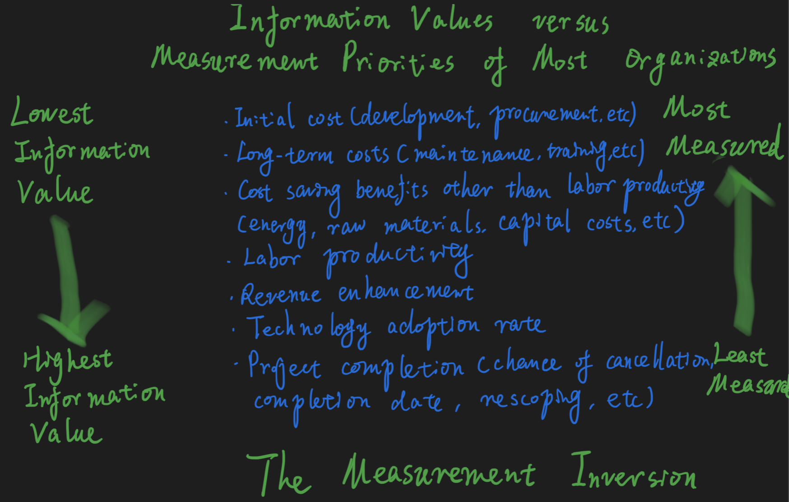

Measure Anything¶
If you don’t measure it, you can’t manage it; If you don’t measure it, you can’t improve it; If you don’t measure it, you probably don’t care; If you can’t influence it, then don’t measure it. - Randy A. Steinberg
Why Measure Anything¶
There is important logic, see below:
If it matters at all, it is detectable/observable
If it is detectable, it can be detected as an amount (or range of possible amounts)
If it can be detected as a range of possible amounts, it can be measured
4 useful measurement assumptions:
your problem is not as unique as you think
you have more data than you think
you need less data than you think
there is a useful measurement that is much simpler than you think
How to Measure¶
Equivalent Bet Test¶
Methods like the equivalent bet test help estimators give more realistic assessments of their uncertainty
https://www.tonym-v.com/blog/2019/10/2/improve-your-estimations-with-the-equivalent-bet-test
Important Aspects of Measurement¶
There are important aspects regarding to measurement:
Systemic error/systemic bias: An inherent tendency of a measurement process to favor a particular outcome; a consistent bias
Random error: An error that is not predictable for individual observations; not consistent or dependent on known variable (although such errors follow the rules of probability in large groups)
Accuracy: A characteristic of a measurement having a low systemic error - that is, not consistently over - or underestimating a value
Precision: A characteristic of a measurement having a low random error; highly consistent results even if they are far from the true value
3 big biases you need to control for: expectancy, selection, and observer bias
Bayesian Statistics¶
Dealing with this prior knowledge is what is called Bayesian statistics. Bayesian statistics is a particular approach to applying probability to statistical problems.
https://www.quantstart.com/articles/Bayesian-Statistics-A-Beginners-Guide/
Frequentist statistics tries to eliminate uncertainty by providing estimates. Bayesian statistics tries to preserve and refine uncertainty by adjusting individual beliefs in light of new evidence.
Applied Information Economic Approach¶
Define a decision problem and the relevant variables. (Start with the decision you need to make, then figure out which variables would make your decision easier if you had better estimates of their values.)
Determine what you know. (Quantify your uncertainty about those variables in terms of ranges and probabilities.)
Pick a variable, and compute the value of additional information for that variable. (Repeat until you find a variable with reasonably high information value. If no remaining variables have enough information value to justify the cost of measuring them, skip to step 5.)
Apply the relevant measurement instrument(s) to the high-information-value variable. (Then go back to step 3.)
Make a decision and act on it. (When you’ve done as much uncertainty reduction as is economically justified, it’s time to act!)
https://www.lesswrong.com/posts/ybYBCK9D7MZCcdArB/how-to-measure-anything
Estimation Methods¶

Z-Score: https://www.investopedia.com/terms/z/zscore.asp
Rasch Model: https://psychology.wikia.org/wiki/Rasch_model https://bookdown.org/dkatz/Rasch_Biome/
Written by Binwei@Shanghai